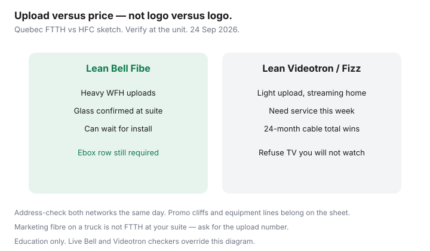

Internet · Canada
Bell Fibe vs Videotron in Québec: Fibre Uploads vs Cable Value
Québec shoppers often pick a brand — Bell or Videotron — when the useful question is fibre-to-the-home uploads versus cable value on the Videotron plant. Fibe’s symmetrical (or near-symmetrical) upload is a different product from Helix hybrid fibre-coax, even when both ads say “fibre.” Evening congestion, promo cliffs, and equipment lines decide the 24-month winner more than the logo on the truck.
Address-check both networks before you decide. Pair this with the national fibre-versus-cable guide and the Montréal bill walkthrough. Education only; facts stamped ~22 Sep 2026.
Disclosure: No Bell or Videotron partnership. ISP offer types only — fibre and cable home-internet plans, approved gateways, and mesh Wi-Fi if radio coverage is the bottleneck. Confirm live quotes at your civic address.
Key takeaways
- FTTH upload is the tell for WFH, cloud backup, and multi-camera video. Cable can still win on download price for streaming-heavy homes.
- Run both address tools (Bell and Videotron) plus a flanker/reseller row before retention calls.
- Normalize promo cliffs, install, and equipment — not month-one stickers.
- Videotron cable still wins when Fibe is copper-fed, late to install, or priced for a mobility bundle you will not keep.
- Use a side-by-side Québec table; do not reuse Ontario Bell flyer math.
FTTH uploads vs cable evening congestion in plain language
Glass to the suite (Bell Pure Fibre / Fibe FTTH) usually delivers high upload because each home’s light path is not sharing a coax node the same way. Videotron’s widely available Helix internet is still largely hybrid fibre-coax: strong download, upload that is a fraction of the download tier, and evening slowdowns when the node is busy.
If three people upload large files at 7 p.m., cable upload is where the pain shows first. If the household is Netflix and browsing, a well-priced Helix 500 may feel identical to Fibe 500 on Wi-Fi laptops. Test wired when you can — Wi-Fi hides both products.
Address-check both networks before you decide
- Bell address tool — note Pure Fibre versus legacy Fibe copper/DSL language, upload, install window.
- Videotron tool — note speed tier, Helix Fi inclusion, self-install versus $99-class tech visit where still quoted.
- Flanker/reseller — Fizz on Videotron plant; Ebox where Bell wholesale applies.
- Write technology, upload, 24-month CAD, and ETF on one sheet. That is your BATNA for winbacks.
A “fibre” truck in the borough is not a unit-level guarantee. Condos and plexes still fail one checker and pass the other.
Promo cliffs and equipment fees on each side
| Line | Bell Fibe (FTTH) | Videotron Helix (HFC) |
|---|---|---|
| Typical upload story | High / often symmetrical on glass | Much lower than download on coax tiers |
| Promo shape | Credits, mobility-bundle discounts, term offers | Credits, Helix TV/phone discounts, lifetime-style small offs |
| Equipment | Bell ONT + often a home hub; bridge your own Wi-Fi | Helix Fi gateway included on many qualifying plans |
| Install | Tech common for glass; calendar risk | Self-install where permitted; tech fee if required |
| ETF risk | Fixed-term schedules still exist after CRTC 2026-43 | Same — disclose and shrink to $0 by ≤24 months |

When Videotron cable still wins on price
- Bell’s checker shows copper or a long install, while Videotron is same-week self-install.
- You need mid-tier download, light upload, and Fizz undercuts Helix on the same coax.
- A written Helix 24-month total beats Fibe after you refuse TV you do not want.
- You value Videotron stores and French phone support over Bell’s channel mix.
When Fibe is worth it for WFH uploads
- Daily cloud backup, VPN-heavy work, or frequent 4K-ish uploads from the suite.
- Two or more video calls while someone else uploads — cable upload saturates first.
- You can bridge the Bell hub and run ethernet to the office so Wi-Fi is not the excuse.
- Ebox or a Bell winback lands glass at a 24-month number you will actually keep.
Side-by-side Québec decision table
| Question | Lean Videotron / Fizz | Lean Bell Fibe |
|---|---|---|
| Upload need | Light (streaming, browsing, one call) | Heavy (WFH uploads, creators, NAS sync) |
| Support | Want stores / Helix stack or accept Fizz chat | Accept Bell channels; want glass |
| TV | Helix TV you will use, or internet-only on cable | Streaming-only; do not need Helix packages |
| Install timing | Need service this week | Can wait for a glass booking |
| 24-month CAD | Lower total after cliffs | Higher monthly but upload earns it |
Sources & date stamps
- CRTC fibre-versus-cable framing and Internet Code (re-read ~22 Sep 2026).
- Bell Québec Fibe address tooling and public plan cards (used ~22 Sep 2026).
- Videotron Helix internet tier language, including HFC upload ratios on public pages (used ~22 Sep 2026).
- Saving Optimizer: fibre vs cable Canada; Fizz vs Videotron; Rogers vs Bell national TCO.
Frequently asked questions
Does Videotron ‘fibre’ mean the same as Bell Fibe glass?
Not always. Marketing ‘fibre’ can mean fibre-fed coax. Ask for the upload number and whether the suite has FTTH. Upload is the plain-language tell.
Can I keep my Videotron TV and switch only internet to Bell?
Sometimes, but bundle discounts may break. Price internet and TV as separate 24-month columns after the switch. Do not assume cross-brand credits.
Is evening slowdown proof Videotron is ‘bad’?
It is often a busy node or in-suite Wi-Fi. Test wired Ethernet at peak. If wired upload is still weak, cable physics — not your modem lights — may be the limit.
Should I wait for Bell to build glass on my street?
Only with a real date and a temporary plan you can exit. Sitting on an expensive copper Fibe promo ‘until fibre arrives’ is how 24-month math dies.
Where does Fizz fit in this comparison?
Fizz is usually the cable-value row on Videotron plant, not a third network. Compare it whenever Helix retail looks high for the same coax.